PSAT-언어논리 (2016-03-05 기출문제)
1. 다음 글에서 알 수 있는 것은?
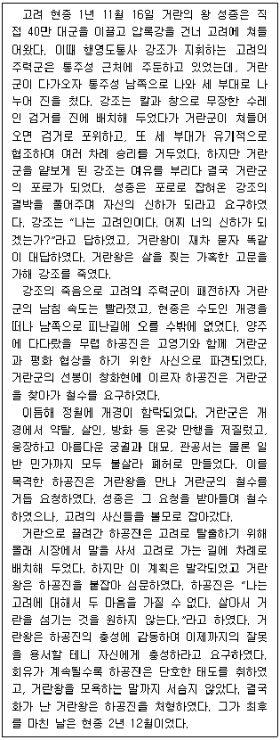
- 거란군에 사신으로 파견된 하공진은 창화현에서 거란왕을 만나 거란군의 철수를 요청하였다.
- 압록강을 건너 고려를 침공한 지 석 달이 되지 않아 거란군은 고려 수도를 함락시켰다.
- 볼모로 거란에 끌려간 하공진과 고영기는 탈출하기 위해 서로 협력하였다.
- 통주성 근처에서 거란군에게 패전한 고려의 주력군은 남쪽으로 후퇴하였다.
- 거란왕을 모욕하는 말을 한 하공진은 가혹한 고문을 당한 후 처형되었다.
(정답률: 알수없음)

2. 다음 글에서 알 수 있는 것은?
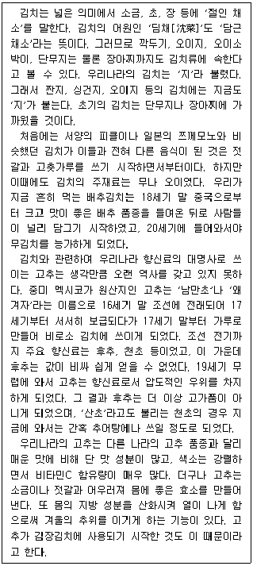
- 17세기에 와서야 고추를 사용한 김치가 출현하였다.
- 고추가 소금, 젓갈과 어우러져 만들어 내는 효소는 우리 몸에 열이 나게 한다.
- 고추를 넣은 배추김치를 먹게 된 것은 중국 및 멕시코와의 농산물 교역 덕분이었다.
- 16세기 이전에는 김치를 담글 때 고추 대신 후추, 천초와 같은 향신료를 사용하였다.
- 젓갈과 고추가 쓰이기 전에는 김치의 제조과정이 서양의 피클이나 일본의 쯔께모노의 그것과 같았다.
(정답률: 알수없음)
3. 다음 글의 내용과 부합하는 것은?
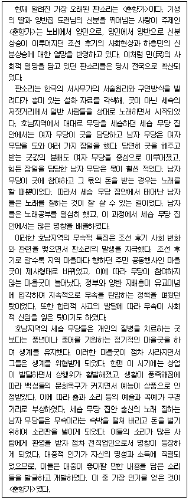
- 호남지역의 무속적 특징이 판소리 발생의 배경이었으므로, 판소리는 호남지역에 국한되었다.
- 호남지역의 세습 무당 집안에서는 일반적으로 여자 무당의 소득이 남자 무당보다 높았다.
- 마을굿의 형식을 표준화하는 과정에서 세습 무당 집안은 명창을 배출하였다.
- 조선 후기 상업 발달은 여자 무당의 쇠퇴와 남자 무당의 성장을 가져왔다.
- 판소리의 시작은 서사무가의 다양화와 무속의 상업화를 가져왔다.
(정답률: 알수없음)
4. 다음 글에서 알 수 있는 것은?
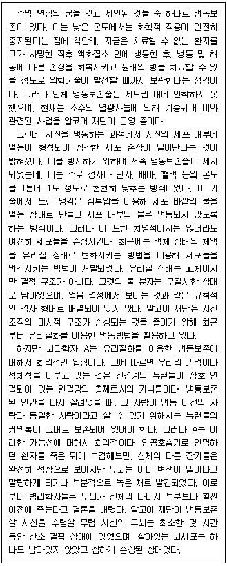
- 냉동보존술이 제도권 내에 안착하지 못한 원인은 높은 비용 때문이다.
- 유리질화를 이용한 냉동보존술은 뉴런들의 커넥톰 보존을 염두에 둔 기술이다.
- 저속 냉동보존술은 정자나 난자, 배아, 혈액을 냉각시킬 때 세포를 손상시키지 않는다.
- 뇌과학자 A에 따르면, 알코어 재단이 시신을 보존하기 시작하는 시점에 뉴런들의 커넥톰은 이미 정상 상태에 있지 않았다.
- 뇌과학자 A에 따르면, 머리 이외의 신체 보존 방식은 저속 냉동보존술이나 유리질화를 이용한 냉동보존술이나 차이가 없다.
(정답률: 알수없음)
5. 다음 글에서 추론할 수 있는 것만을 ＜보기＞에서 모두 고르면?
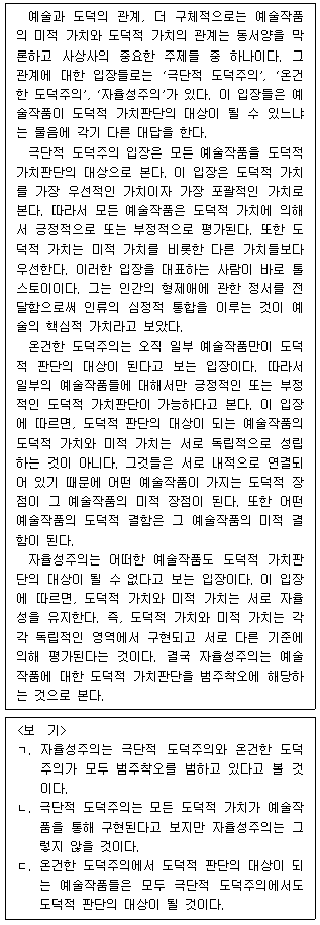
- ㄱ
- ㄴ
- ㄱ, ㄷ
- ㄴ, ㄷ
- ㄱ, ㄴ, ㄷ
(정답률: 알수없음)
6. 다음 글에서 추론할 수 없는 것은?
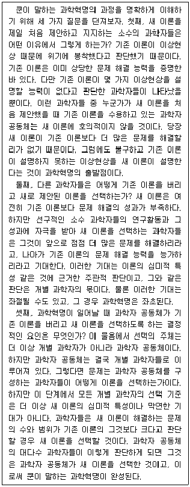
- 심미적 관점에서 우월한 이론일수록 해결 가능한 문제의 범위와 수에서도 우월하다.
- 과학자가 이론을 선택하는 기준은 과학혁명의 진행 단계에 따라 변하기도 한다.
- 이론이 설명하지 못하는 이상현상이 존재한다고 해서 과학자 공동체가 그 이론을 폐기하는 것은 아니다.
- 기존 이론의 이상현상을 설명하는 이론이 없이는 과학혁명이 시작되지 않는다.
- 과학자 공동체는 해결하지 못하는 문제가 있더라도 더 많은 문제를 해결하는 이론을 선택한다.
(정답률: 알수없음)
7. 다음 글에서 추론할 수 없는 것은?
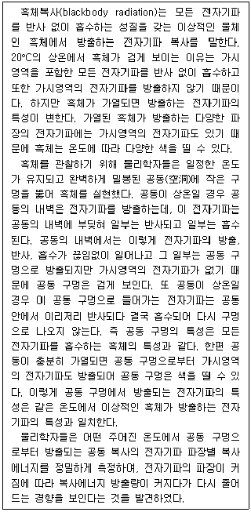
- 흑체의 온도를 높이면 흑체가 검지 않게 보일 수도 있다.
- 공동의 온도가 올라감에 따라 복사에너지 방출량은 커지다가 줄어든다.
- 공동을 가열하면 공동 구멍에서 다양한 파장의 전자기파가 방출된다.
- 흑체가 전자기파를 방출할 때 파장에 따라 복사에너지 방출량이 달라진다.
- 상온으로 유지되는 공동 구멍이 검게 보인다고 공동 내벽에서 방출되는 전자기파가 없는 것은 아니다.
(정답률: 알수없음)
8. 다음 글의 내용이 참일 때, 반드시 참인 것은?
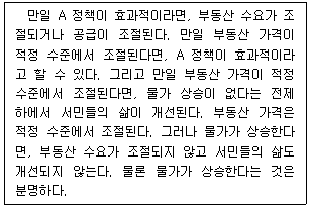
- 서민들의 삶이 개선된다.
- 부동산 공급이 조절된다.
- A 정책이 효과적이라면, 물가가 상승하지 않는다.
- A 정책이 효과적이라면, 부동산 수요가 조절된다.
- A 정책이 효과적이라도, 부동산 가격은 적정 수준에서 조절되지 않는다.
(정답률: 알수없음)
9. 정책 갑에 대하여 A~G는 찬성이나 반대 중 한 의견을 제시하였다. 이들의 찬반 의견이 다음과 같다고 할 때, 반대 의견을 제시한 사람의 최소 인원은?
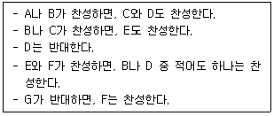
- 2명
- 3명
- 4명
- 5명
- 6명
(정답률: 알수없음)
10. 다음 글의 대화 내용이 참일 때, 갑수보다 반드시 나이가 적은 사람만을 모두 고르면?
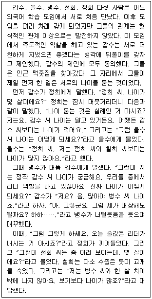
- 정희
- 철희, 을수
- 정희, 을수
- 철희, 정희
- 철희, 정희, 을수
(정답률: 알수없음)
11. 다음 글의 내용과 상충하는 것은?
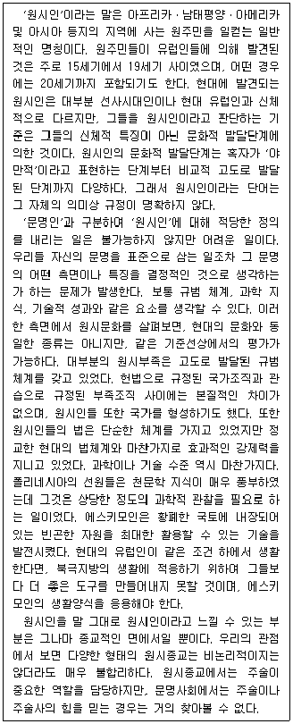
- 원시사회의 법보다 현대 유럽사회의 법이 더 효과적이지는 않다.
- 현대 유럽사회의 종교와 달리 원시사회의 종교는 비논리적이었다.
- 원시문화가 인간 문화의 가장 초보적 단계를 의미하는 것은아니다.
- 자연환경에 최적화된 원시사회의 기술이 현대 유럽사회의 기술보다 저급하지는 않다.
- 유럽인들이 15세기에 발견한 원시인들은 19세기에 발견한 원시인들보다 문화적 발달단계가 더 낮은 것은 아니다.
(정답률: 알수없음)
12. 다음 글의 갑~병의 견해에 대한 분석으로 가장 적절한 것은?
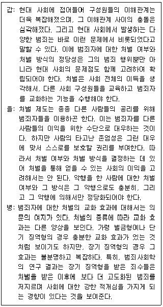
- 처벌의 정당성을 확립하기 위한 고려사항에 대해 갑과 을의 의견은 양립 가능하다.
- 갑과 달리 을은 현대 사회에 접어들어 구성원들 간 이해관계의 충돌이 더욱 심해졌다는 것을 부정한다.
- 을과 달리 갑은 사람에게는 타고난 존엄성이 있다는 것을 부정한다.
- 병은 처벌이 갑이 말하는 기능을 수행하지 못할 수도 있다는 것을 보여준다.
- 병은 처벌이 을이 말하는 방식으로 정당화될 수 없다는 것을 보여준다.
(정답률: 알수없음)
13. 다음 글의 논지를 강화하는 것만을 ＜보기＞에서 모두 고르면?
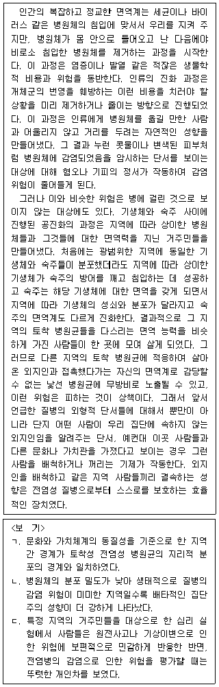
- ㄱ
- ㄴ
- ㄱ, ㄷ
- ㄴ, ㄷ
- ㄱ, ㄴ, ㄷ
(정답률: 알수없음)
14. 다음 글의 ㉠을 지지하는 것으로 적절한 것은?
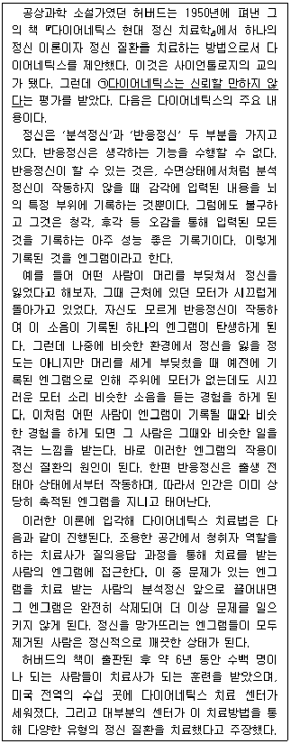
- 엔그램은 영구적인 것이 아니며 삭제되기도 한다는 것이 밝혀졌다.
- 상당수의 정신 질환이 태아 시절의 경험에서 비롯되었다는 것이 밝혀졌다.
- 엔그램의 기억에는 의식하지 못한 상태에서 기록된 것이 많이 있다는 것이 밝혀졌다.
- 다이어네틱스 치료 센터는 프라이버시 보호 규정에 따라 환자의 신상 정보를 공개하지 않았다.
- 뇌기능 검사를 통해 반응정신의 작동 결과를 기록하는 뇌 부위가 없다는 결과를 얻었다.
(정답률: 알수없음)
15. 다음 글의 논지를 약화하는 것으로 적절하지 않은 것은?
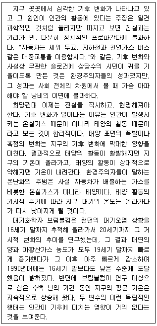
- 인간이 출현하기 이전인 고생대 석탄기에 북유럽의 빙하지대에 고사리와 같은 난대성 식물이 폭넓게 서식하였다.
- 태양 활동의 변화와 기후 변화의 양상 간의 상관관계를 조사해 보니 양자의 주기가 일치하지 않았다.
- 태양 표면의 폭발이 많아지는 시기에 지구의 평균 기온은 오히려 내려간 사례가 많았다.
- 최근 20년 간 세계 여러 나라가 연대하여 대기오염을 줄이는 적극적인 노력을 기울인 결과 지구의 평균 기온 상승률이 완화되었다.
- 최근 300년 간 태양의 활동에 따른 기후 변화의 몫보다는 인간의 활동에 의해 좌우되는 기후 변화의 몫이 더 크다는 증거가 있다.
(정답률: 알수없음)
16. 다음 글의 관점 A~C에 대한 평가로 적절한 것만을 ＜보기＞에서 모두 고르면?
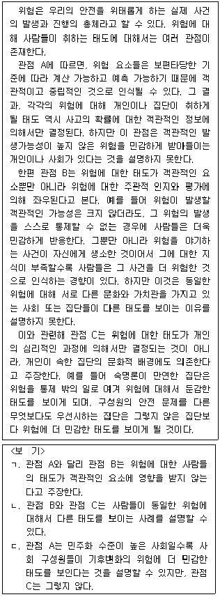
- ㄱ
- ㄴ
- ㄱ, ㄷ
- ㄴ, ㄷ
- ㄱ, ㄴ, ㄷ
(정답률: 알수없음)
17. 다음 글의 ㉠으로 가장 적절한 것은?
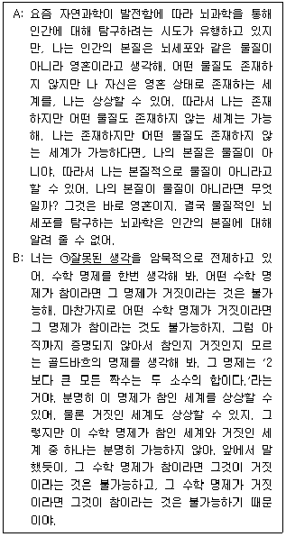
- 인간의 본질은 영혼이거나 물질이다.
- 우리가 상상할 수 있는 모든 세계는 가능하다.
- 우리가 상상할 수 없는 어떤 것도 참일 수 없다.
- 물질이 인간의 본질이 아니라는 것은 상상할 수 없다.
- 뇌과학이 다루는 문제와 수학이 다루는 문제는 동일하다.
(정답률: 알수없음)
18. 다음 글의 <실험 결과>와 양립 가능한 것만을 ＜보기＞에서 모두 고르면?
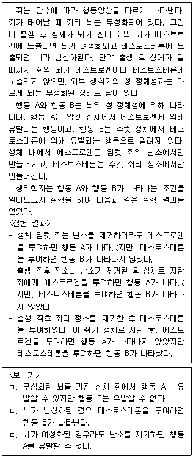
- ㄱ
- ㄷ
- ㄱ, ㄴ
- ㄴ, ㄷ
- ㄱ, ㄴ, ㄷ
(정답률: 알수없음)
19. 다음 글의 물음에 대한 답으로 가장 적절한 것은?(19번 공통지문 문제)
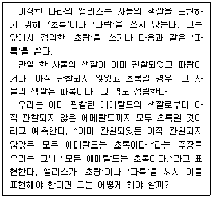
- 모든 에메랄드는 초랑이다.
- 모든 에메랄드는 파록이다.
- 관찰된 모든 에메랄드는 초랑이고, 아직 관찰되지 않은 모든 에메랄드는 파록이다.
- 관찰된 모든 에메랄드는 파록이고, 아직 관찰되지 않은 모든 에메랄드는 초랑이다.
- 관찰된 모든 에메랄드는 초랑이거나 파록이지만, 아직 관찰되지 않은 모든 에메랄드는 초랑도 아니고 파록도 아니다.
(정답률: 알수없음)
20. 다음 글에서 알 수 있는 것은?
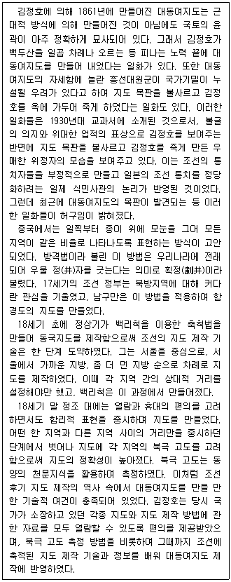
- 불굴의 의지를 가지고 백두산을 일곱 번 오르는 등의 노력을 한 끝에 김정호는 대동여지도를 제작할 수 있었다.
- 김정호는 대동여지도를 제작하면서 백리척의 축척법은 이용하였으나, 중국에서 전래된 방격법은 사용하지 않았다.
- 정조 대 이후 조선에서는 천문지식을 활용하여 지도의 정확성을 높였으며, 대동여지도 제작에 이러한 지식이 활용되었다.
- 지도의 정확성을 높이기 위하여, 정상기는 서울에서부터 지방까지의 거리를 실측해가면서 백리척을 이용하여 동국지도를 만들었다.
- 조선의 중요한 지리 정보가 다른 나라에 누설될 수 있다는 판단 때문에 김정호의 대동여지도 목판이 불태워 없어졌다는 이야기는 대원군 때부터 민간에 퍼지기 시작하였다.
(정답률: 알수없음)
21. 다음 글에서 알 수 있는 것은?
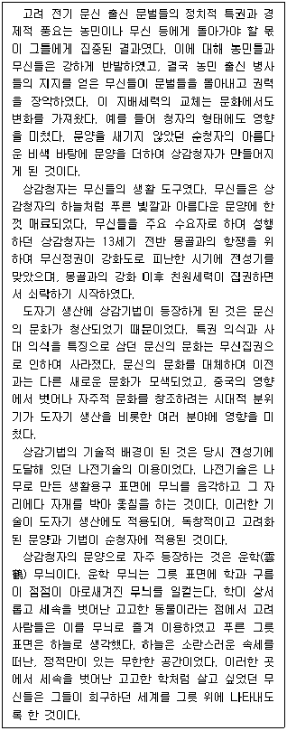
- 나전기술이 무신집권기에 개발되어 상감청자를 만드는 데 적용되었다.
- 청자의 사용은 무신의 집권과 더불어 등장하게 된 자주적인 문화양상이다.
- 몽골과의 전쟁이 발발하자 상감청자를 사용하는 문화는 쇠퇴하기 시작하였다.
- 무신들은 최고 권력을 쟁취하고자 하는 꿈을 상감청자의 학 문양에 담았다.
- 문벌에서 무신으로 고려의 지배층이 변함에 따라 청자의 형태도 영향을 받았다.
(정답률: 알수없음)
22. 다음 글에서 알 수 없는 것은?
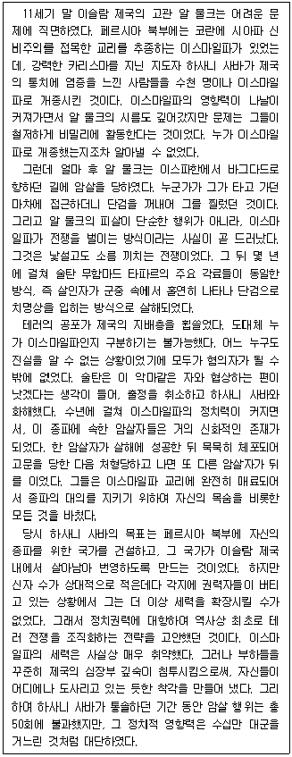
- 이스마일파의 테러는 소수 집단의 한계를 극복하는 방안의 하나로서 사용되었다.
- 이스마일파의 테러리스트들은 자신이 신봉하는 대의를 지키기 위해 희생을 마다하지 않았다.
- 이스마일파의 테러가 효과적이었던 이유는 제국 곳곳에 근거지를 확보할 수 있었기 때문이다.
- 이스마일파는 테러를 통해 제국의 지배층에 공포 분위기를 조성함으로써 커다란 정치력을 발휘하였다.
- 이스마일파의 구성원을 식별할 수 없었기 때문에 이슬람 제국의 지배층은 테러에 효과적으로 대응할 수 없었다.
(정답률: 알수없음)
23. 다음 글에서 알 수 없는 것은?
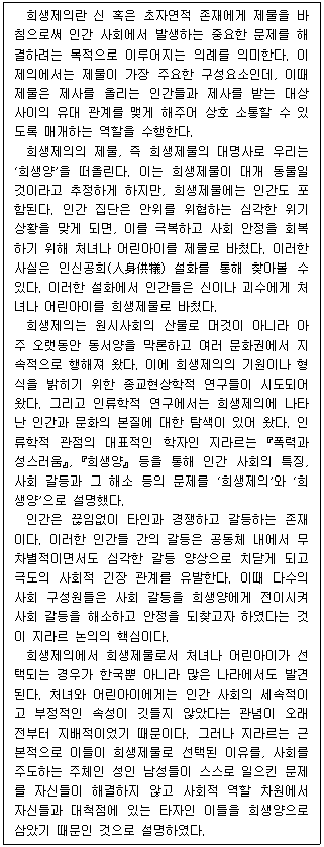
- 종교현상학적 연구는 인간 사회의 특성과 사회 갈등 형성 및 해소를 희생제의와 희생양의 관계를 통해 설명한다.
- 지라르에 따르면, 다수의 사회 구성원들은 사회 갈등을 희생양에게 전이시킴으로써 사회 안정을 이루고자 하였다.
- 희생제물을 통해 위기를 극복하고 사회의 안정을 회복하고자 한 의례 행위는 동양에 국한된 것은 아니다.
- 지라르에 따르면, 희생제물인 처녀나 어린아이들은 성인 남성들과 대척점에 있는 존재이다.
- 인신공희 설화에서 희생제물인 어린아이들은 인간들과 신 혹은 괴수 간에 소통을 매개한다.
(정답률: 알수없음)
24. 다음 글에서 추론할 수 없는 것은?
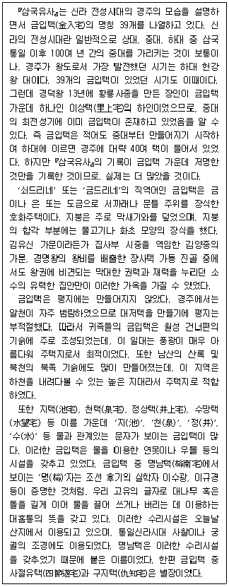
- 금입택은 신라 하대 이전에 이미 존재하였다.
- 진골 귀족이라도 금입택을 소유하지 못한 경우도 있었다.
- 이름에 물과 관계있는 문자가 들어간 금입택은 물을 이용한 시설을 갖추고 있었다.
- 명남택에서 사용한 수리시설은 귀족 거주용 주택이 아닌 건물에서도 사용되었다.
- 월성 건너편의 기슭은 하천을 내려다볼 수 있는 높은 지대였으므로 주택지로서 적합하였다.
(정답률: 알수없음)
25. 다음 글에서 추론할 수 있는 것만을 ＜보기＞에서 모두 고르면?
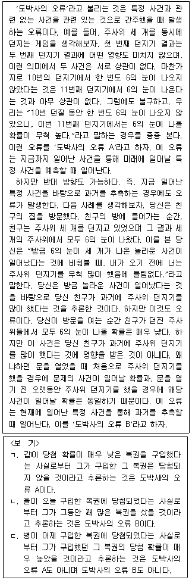
- ㄱ
- ㄴ
- ㄱ, ㄷ
- ㄴ, ㄷ
- ㄱ, ㄴ, ㄷ
(정답률: 알수없음)
26. 다음 글에서 추론할 수 있는 것은?
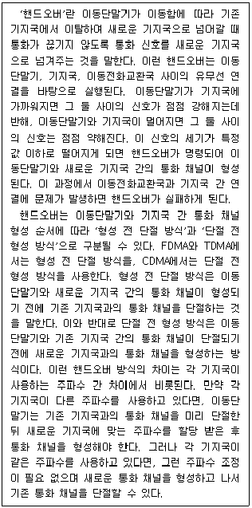
- 단절 전 형성 방식의 각 기지국은 서로 다른 주파수를 사용한다.
- 형성 전 단절 방식은 단절 전 형성 방식보다 더 빨리 핸드오버를 명령할 수 있다.
- 이동단말기와 기존 기지국 간의 통화 채널이 단절되면 핸드오버가 성공한다.
- CDMA에서는 하나의 이동단말기가 두 기지국과 동시에 통화 채널을 형성할 수 있지만 FDMA에서는 그렇지 않다.
- 이동단말기 A와 기지국 간 신호 세기가 이동단말기 B와 기지국 간 신호 세기보다 더 작다면 이동단말기 A에서는 핸드오버가 명령되지만 이동단말기 B에서는 핸드오버가 명령되지 않는다.
(정답률: 알수없음)
27. 다음 글의 내용이 참일 때, 반드시 참인 것만을 ＜보기＞에서 모두 고르면?
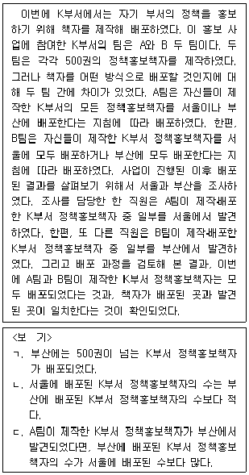
- ㄱ
- ㄷ
- ㄱ, ㄴ
- ㄴ, ㄷ
- ㄱ, ㄴ, ㄷ
(정답률: 알수없음)
28. 사무관 A는 국가공무원인재개발원에서 수강할 과목을 선택하려 한다. A가 선택할 과목에 대해 갑~무가 다음과 같이 진술하였는데 이 중 한 사람의 진술은 거짓이고 나머지 사람들의 진술은 모두 참인 것으로 밝혀졌다. A가 반드시 수강할 과목만을 모두 고르면?
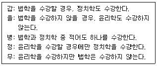
- 윤리학
- 법학
- 윤리학, 정치학
- 윤리학, 법학
- 윤리학, 법학, 정치학
(정답률: 알수없음)
29. 다음 글의 ⓐ∼ⓔ에 대한 평가로 적절한 것만을 ＜보기＞에서 모두 고르면?
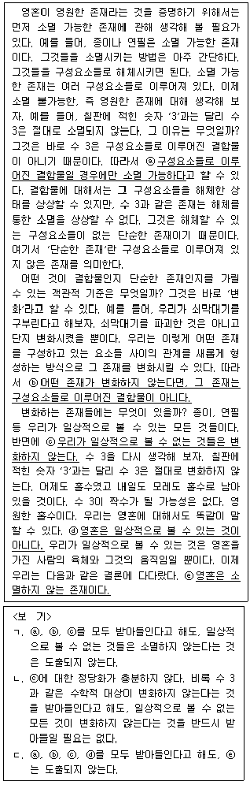
- ㄱ
- ㄴ
- ㄱ, ㄷ
- ㄴ, ㄷ
- ㄱ, ㄴ, ㄷ
(정답률: 알수없음)
30. 다음 글의 내용과 상충하는 것은?
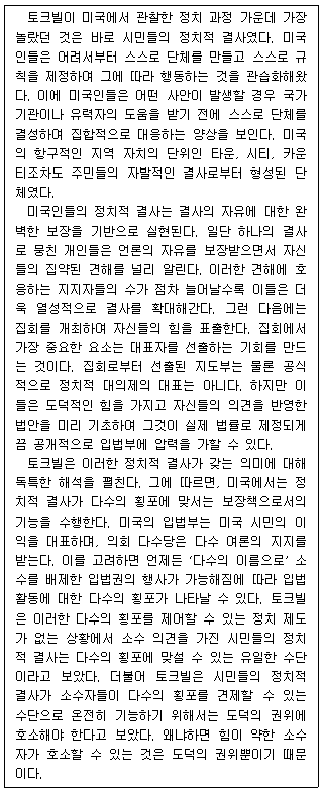
- 미국 정치는 다수에 의한 지배를 정당화하는 체제를 토대로 한다.
- 미국에서는 처음에 자발적 결사로 시작된 단체도 항구적 자치 단체로 성장할 수 있다.
- 미국 시민들은 정치적 결사를 통해 실제 법률 제정과 관련하여 입법부에 압력을 행사할 수 있다.
- 토크빌에 따르면, 미국에서 소수자는 도덕의 권위에 도전함으로써 다수의 횡포에 저항해야 한다.
- 토크빌에 따르면, 미국에서 정치적 결사는 시민들의 소수 의견이 배제된 입법 활동을 제어하는 역할을 한다.
(정답률: 알수없음)
31. 다음 대화에 대한 분석으로 적절하지 않은 것은?
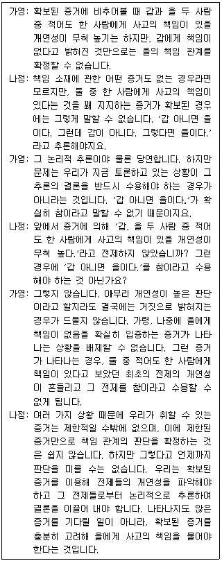
- 가영과 나정은 모두 책임 소재의 규명에서 증거의 역할을 부정하지 않는다.
- 가영은 책임 소재를 규명하는 과정에서 사용되는 전제의 개연성은 달라질 수 있다고 주장한다.
- 가영과 달리 나정은 어떤 판단의 개연성이 충분히 높다면 그 판단을 수용할 수 있다고 주장한다.
- 나정은 가영의 견해에 따를 경우 책임 소재에 관한 판단이 계속 미결 상태로 표류할 수도 있다고 주장한다.
- 나정과 달리 가영은 참인 전제들로부터 논리적 추론을 이용해서 도출된 결론이 거짓일 수 있다고 주장한다.
(정답률: 알수없음)
32. 다음 글의 ㉠에 대한 평가로 적절하지 않은 것은?
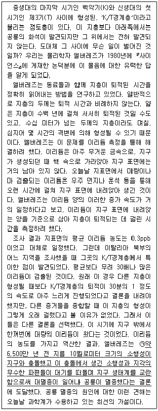
- 만일 신생대 제3기(T) 이후에 형성된 지층에서 공룡 화석이 대량으로 발견될 경우 약화된다.
- 고생대 페름기에 일어난 대멸종이 소행성 충돌과 무관하게 진행되었다는 사실이 입증되더라도 강화되지 않는다.
- 동일한 시간 동안 우주먼지로 지구에 유입되는 이리듐의 양이 일정하지 않고 큰 변화폭을 지닌다는 사실이 입증되면 약화된다.
- 앨버레즈가 조사한 이탈리아 북부의 지층이 K/T경계층이 아니라 다른 시기에 형성된 지층이었음이 밝혀질 경우 약화된다.
- K/T경계층 형성 시기 이외에 공룡이 존재했던 다른 시기에도 지름 10킬로미터 규모의 소행성이 드물지 않게 지구에 충돌했음이 입증될 경우 강화된다.
(정답률: 알수없음)
33. 다음 글의 ㉠에 대한 두 비판을 평가한 것으로 적절한 것만을 ＜보기＞에서 모두 고르면?
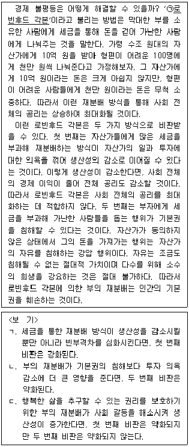
- ㄱ
- ㄴ
- ㄱ, ㄷ
- ㄴ, ㄷ
- ㄱ, ㄴ, ㄷ
(정답률: 알수없음)
34. 다음 글의 논증에 대한 비판으로 적절하지 않은 것은?
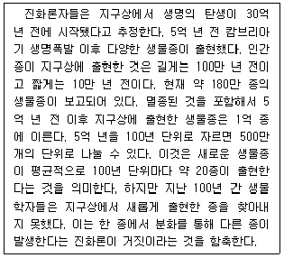
- 100년마다 20종이 출현한다는 것은 다만 평균일 뿐이다. 현재의 신생 종 출현 빈도는 그보다 훨씬 적을 수 있지만 언젠가 신생 종이 훨씬 많이 발생하는 시기가 올 수 있다.
- 5억 년 전 이후부터 지구상에 출현한 생물종이 1,000만 종 이하일 수 있다. 그러면 100년 내에 새로 출현하는 종의 수는 2종 정도이므로 신생 종을 발견하기 어려울 수 있다.
- 생물학자는 새로 발견한 종이 신생 종인지 아니면 오래 전부터 존재했던 종인지 판단하기 어렵다. 따라서 신생 종의 출현이나 부재로 진화론을 검증하려는 시도는 성공할 수 없다.
- 30억 년 전에 생물이 출현한 이후 5차례의 대멸종이 일어났으나 대멸종은 매번 규모가 달랐다. 21세기 현재, 알려진 종 중 사라지는 수가 크게 늘고 있어 우리는 인간에 의해 유발된 대멸종의 시대를 맞이하는 것으로 볼 수 있다.
- 생물학자들이 발견한 몇몇 종은 지난 100년 내에 출현한 종이라고 판단할 이유가 있다. DNA의 구성에 따라 계통수를 그렸을 때 본줄기보다는 곁가지 쪽에 배치될수록 늦게 출현한 종임을 알 수 있기 때문이다.
(정답률: 알수없음)
35. 다음 글의 논지를 약화하는 것만을 ＜보기＞에서 모두 고르면?
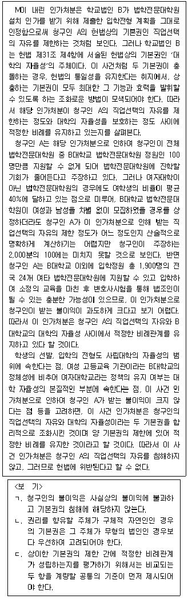
- ㄱ
- ㄷ
- ㄱ, ㄴ
- ㄴ, ㄷ
- ㄱ, ㄴ, ㄷ
(정답률: 알수없음)
36. 다음 글의 빈칸에 들어갈 내용으로 가장 적절한 것은?
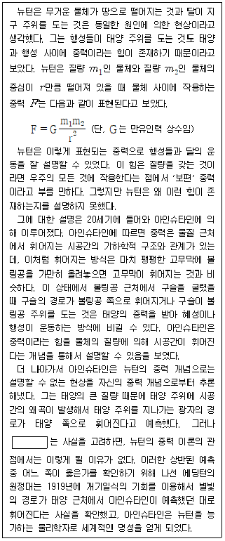
- 광자는 질량을 갖지 않는다
- 진공 속에서 광자의 속력은 일정하다
- 물체의 질량이 클수록 더 큰 중력을 발휘한다
- 중력은 지구의 표면과 우주 공간에서 동일하다
- 시간과 공간은 물체의 질량이나 운동에 영향을 받지 않는다
(정답률: 알수없음)
37. 다음 글의 ㉠∼㉢에 들어갈 말을 바르게 나열한 것은?(순서대로 ㉠, ㉡, ㉢)
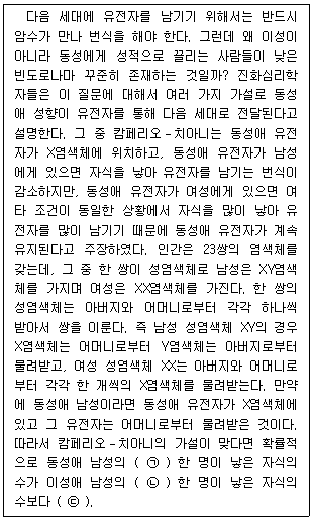
- 이모, 이모, 많다
- 고모, 고모, 많다
- 이모, 고모, 적다
- 고모, 고모, 적다
- 이모, 이모, 적다
(정답률: 알수없음)
38. 다음 두 전제가 모두 참이라고 할 때, 위 글에서 추론할 수 있는 것은?(39번 공통지문 문제)
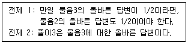
- 물음1의 답변과 물음2의 답변은 같아야 한다.
- 물음1의 답변과 물음2의 답변을 모두 수정해야 한다.
- 물음1의 답변을 유지하는 대신에 물음2의 답변을 수정해야 한다.
- 물음2의 답변을 유지하는 대신에 물음1의 답변을 수정해야 한다.
- 이름을 알려주는 것이 확률을 바꾸는 정보를 주는 것이 아니라면, 물음1의 답변을 수정해야 한다.
(정답률: 알수없음)